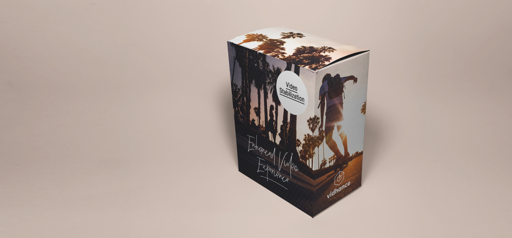
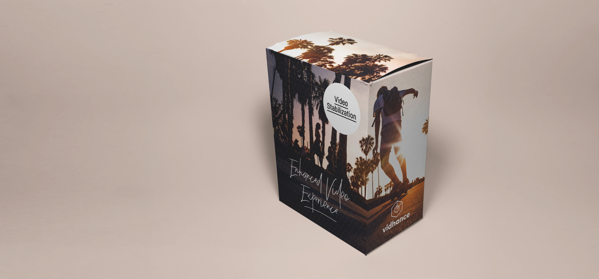
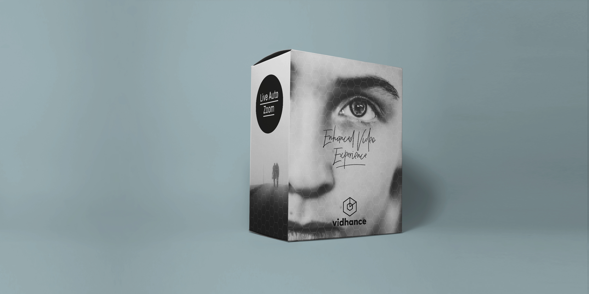
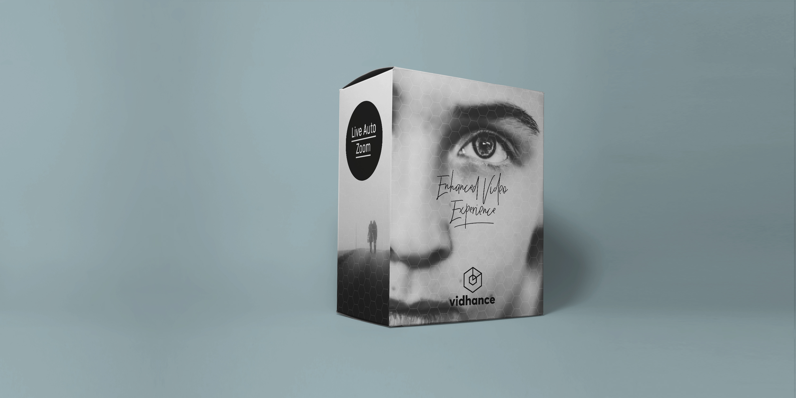

Additional Material for Press Release 25/09 2017
- Vidhance Video Stabilization Comparison Videos & Benmarks
- Vidhance Video Stabilization Add-On Features
- Video examples of Vidhance Live Auto Zoom
- Image examples of Vidhance Live Auto Zoom
- Product Images
- Vivo X20/X20 Plus Images
- Individuals
- Logotypes
Vidhance Video Stabilization Comparison Videos & Benmarks
1. iPhone 7 Plus: “iPhone_skyline”
Side by side video
Download the online resouce at: https://vimeo.com/205057650/74d7d4e544
Stabilization quality comparison
Open in a separate window: iPhone_skyline
2. iPhone 7 Plus: “iPhone_stairs”
Side by side video
Download the online resouce at: https://vimeo.com/205058276/12ec180291
Stabilization quality comparison
Open in a separate window: iPhone_stairs
3. Google Pixel: “Pixel_stairs”
Side by side video
Download the online resouce at: https://vimeo.com/205058877/b5f7d00232
Stabilization quality comparison
Open in a separate window: Pixel_stairs
4. Google Pixel: “Pixel_zoom”
Side by side video
Download the online resouce at: https://vimeo.com/205060625/88e93319d3
Stabilization quality comparison
Open in a separate window: Pixel_stairs
5. Sony XZ: “Sony_normal”
Side by side video
Download the online resouce at: https://vimeo.com/205061792/d2a346ed85
6. Sony XZ: “Sony_zoom”
Side by side video
Download the online resouce at: https://vimeo.com/205062174/2f7ed5ffa6
Vidhance Video Stabilization Add-On Features
1. Vidhance Dynamic Motion Blur Reduction
The Vidhance Dynamic Motion Blur Reduction (VDMBR) minimizes the effect of motion blur of a stabilized video in a dynamic way.Download the online resouce at: https://vimeo.com/228058701
2. Vidhance Time Lapse
The Time Lapse feature uses the Vidhance stabilization feature and is supplemented with an additional spatial component for a superior end result.Download online resouce at: https://vimeo.com/231992126
Video examples of Vidhance Live Auto Zoom
1. Boat
Vidhance Live Auto Zoom automatically smooth zooms and pans directly during recording.Download the online resouce at: https://vimeo.com/201029608/beec370960
2. Paris Statue
Download online resouce at: https://vimeo.com/204221274/016bd4731a
3. Multi-tracker
Vidhance Live Auto Zoom integrates a purpose-built, multi-object tracker and sizer, leaving the user to focus on the overall cinematic experience.Download online resouce at: https://vimeo.com/231867307
Image examples of Vidhance Live Auto Zoom
1. User Guide
Open in a separate window: User Guide
2. Boat
Open in a separate window: Boat
3. Paris Statue
Open in a separate window: Paris Statue
4. Multi-trackers
Open in a separate window: Multi-tracker
Product Images
Vidhance Video Stabilization
 

Open in a separate window: VS Square 1
Open in a separate window: VS Square 2
{kind=link}
Vidhance Live Auto Zoom
 

Open in a separate window: Live Auto Zoom 1
Open in a separate window: Live Auto Zoom 2
{kind=link}
Vivo X20/X20 Plus Images
.jpg)
Open in a separate window: Vivo 1
.jpg)
Open in a separate window: Vivo 2
.jpg)
Open in a separate window: Vivo 3
.jpg)
Open in a separate window: Vivo 4
.jpg)
Open in a separate window: Vivo 5
.jpg)
Open in a separate window: Vivo 6
.jpg)
Open in a separate window: Vivo 7
.jpg)
Open in a separate window: Vivo 8
.jpg)
Open in a separate window: Vivo 9
.jpg)
Open in a separate window: Vivo 10
.jpg)
Open in a separate window: Vivo 11
Individuals
Andreas Lifvendahl, CEO (Open in a separate window: Andreas Lifvendahl)
Jens Ålander, CFO (Open in a separate window: Jens Ålander)
{kind=link}
{kind=link}
Johan Svensson, Product Director (Open in a separate window: Johan Svensson)
Jan Nyrén, Marketing Director (Open in a separate window: Jan Nyrén)
{kind=link}
{kind=link}
Logotypes
Open in a separate window: Logo Centred
Open in a separate window: Logo Landscape
Open in a separate window: Logo + Enhanced
{kind=link}
{kind=link}
{kind=link}
For more information, please visit www.vidhance.com